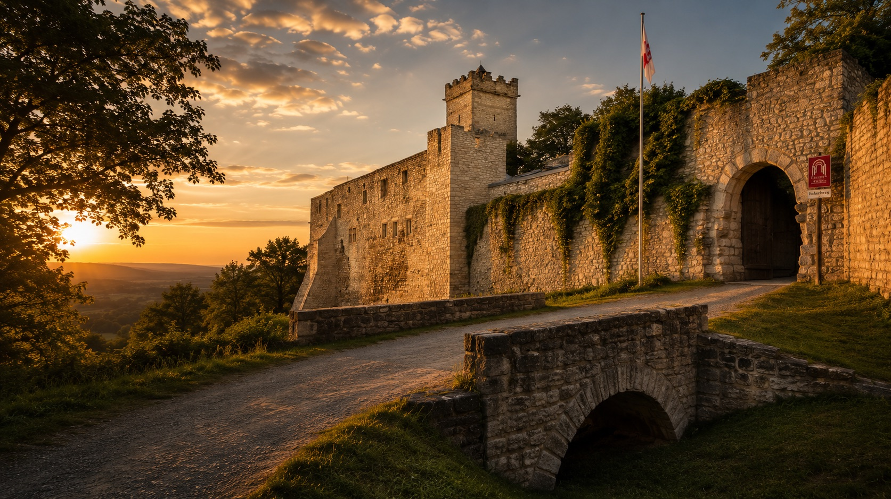

GROSSKALIBER SCHÜTZENGILDE 1503 ECKARTSBERGA E. V.
Schützentradition in Eckartsberga.
Sport. Gemeinschaft. Präzision.
Nächste Veranstaltung
Nächster Termin
Termine ansehen
Schießsport erleben
Training · Wettkämpfe · Gemeinschaft
Vom Einsteiger bis zum erfahrenen Sportschützen – bei uns stehen Tradition, Präzision und Gemeinschaft im Mittelpunkt.
Mehr erfahrenMitglied werden
Tradition · Gemeinschaft · Mitmachen
Ob Einsteiger oder erfahrener Schütze – lernen Sie unseren Verein kennen und entdecken Sie modernen Schießsport, eine starke Gemeinschaft und gelebte Tradition.
Jetzt informierenUnser Verein
Tradition. Gemeinschaft. Leidenschaft.
Das Schützenwesen hat in Eckartsberga eine lange Tradition, deren Spuren bis ins frühe 16. Jahrhundert zurückreichen. Die heutige Großkaliber Schützengilde 1503 Eckartsberga e. V. verbindet diese Geschichte mit modernem Schießsport, Gemeinschaft und einem aktiven Vereinsleben.
Schießbahnen & Vereinshaus
Vereinsleben und sportliche Begegnungen finden bei uns einen gemeinsamen Ort.
Ansprechpartner
Der persönliche Austausch und verlässliche Verantwortlichkeiten tragen unsere Gemeinschaft.
Erfolge
Schützenkönige, Wettkampferfolge und besondere Leistungen gehören zu unserer Geschichte.
Vereinsgeschichte
Historische Spuren und ein Neubeginn.
Von ersten Überlieferungen aus dem Jahr 1503 über die 1827 neu gegründete Schützengilde bis zur Gründung des heutigen Vereins 1992: Historische Bilder und Quellen erzählen von Tradition, Brüchen und Neubeginn.
Veranstaltungschronik
Termine, Ergebnisse & Bilder an einem Ort.
Die Chronik bündelt kommende Veranstaltungen, vergangene Wettkämpfe, Ergebnisse, Bilder und Downloads in einer übersichtlichen Timeline.
Einblicke
Bilder aus Verein, Wettkampf und Tradition.
Ausgewählte Aufnahmen verbinden die lange Geschichte des Vereins mit der Gegenwart in Eckartsberga.





Vereinsleben im Bild
Geschichte und Gegenwart im Wechsel.
Historische Motive und aktuelle Eindrücke erzählen gemeinsam von Tradition, Heimatverbundenheit und einem lebendigen Verein.
Gästebuch
Stimmen unserer Gäste.
Mitmachen
Gemeinschaft beginnt mit Kennenlernen.
Ob mit Erfahrung oder ganz am Anfang: Wer sich für den Schießsport und unser Vereinsleben interessiert, ist eingeladen, die GSG Eckartsberga bei einer kommenden Veranstaltung kennenzulernen.
Kommende Termine ansehen